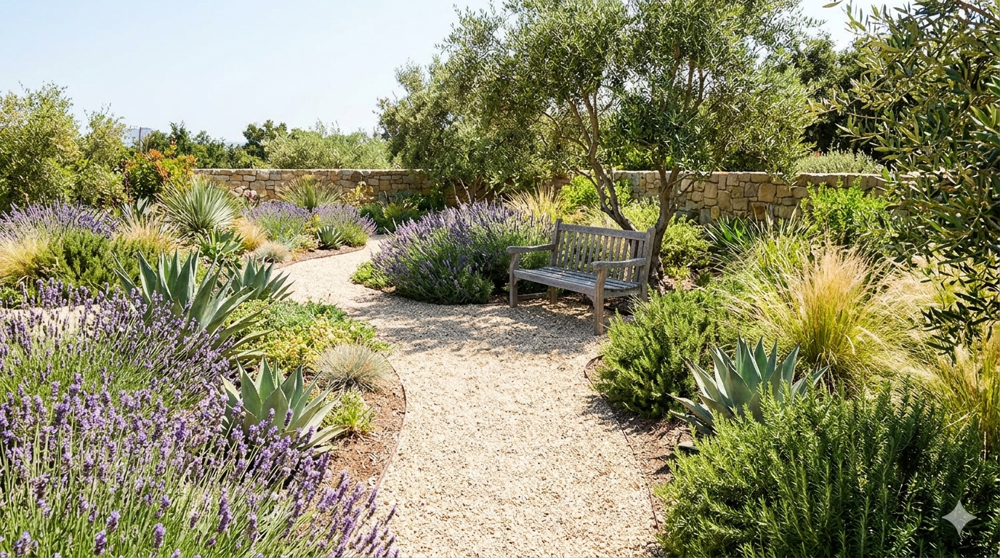

Discover Garden ideas

The Pollinator Paradise
A vibrant, buzzing oasis designed to attract butterflies and bees. This garden features a succession of colorful blooms and native plants, providing essential nectar throughout the seasons.
The variety of heights and textures creates a lively, natural look that supports local biodiversity while remaining incredibly easy to care for.
Purple Coneflower (Echinacea purpurea), Butterfly Bush (Buddleja davidii), Milkweed (Asclepias syriaca), Bee Balm (Monarda didyma), Black-eyed Susan (Rudbeckia hirta), Aster (Symphyotrichum spp.)

The Sun-Drenched Haven
This Mediterranean-inspired retreat pairs drought-tolerant lavender and rosemary with structural agaves.
A gravel path leads to a quiet bench under a small olive tree, creating a water-wise sanctuary that thrives in full sun with minimal effort.
Olive Tree (Olea europaea) , Lavender (Lavandula angustifolia) , Rosemary (Rosmarinus officinalis) , Agave (Agave spp.) , Mexican Feather Grass (Nassella tenuissima) , Thyme (Thymus vulgaris)

The Shady Woodland Retreat
Escape to a tranquil, cool sanctuary. This garden uses a canopy of existing trees to nurture a dense tapestry of textures and forms, featuring varied greens from hostas and ferns.
A winding path creates a natural, easy-to-maintain sense of journey.
Japanese Maple (Acer palmatum), Hosta (Hosta spp.), Ostrich Fern (Matteuccia struthiopteris), Japanese Forest Grass (Hakonechloa macra), Bleeding Heart (Dicentra spectabilis), Wild Ginger (Asarum canadense)